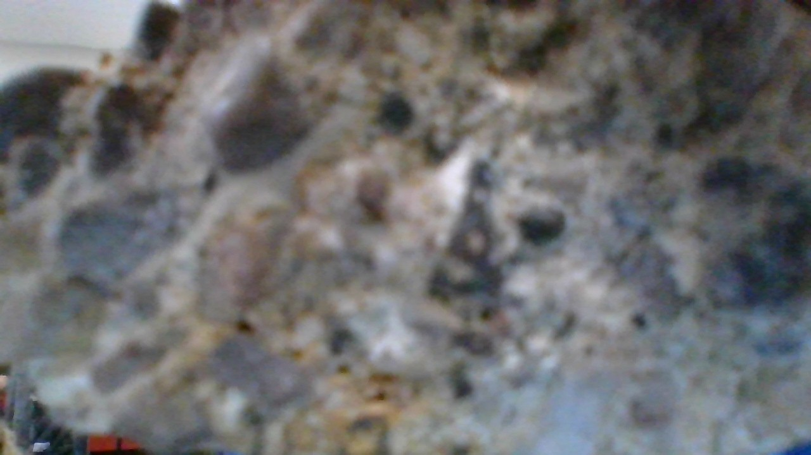
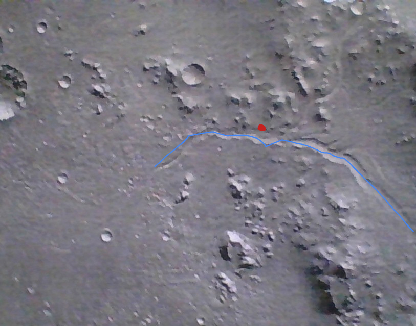
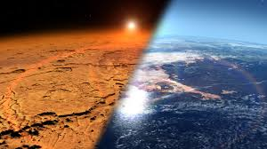

What is Mars?
Mars is the fourth rocky planet from our sun, and it is sometimes referred to as the "red planet" because of the rich amount of iron dust occupying most of its geosphere. Scientists are wondering whether Mars could be, is, or was habitable.
A rock found on Mars

The rock pictured above is a sedimentary rock, which can be determined from how it is very porous. Sedimentary rocks are formed by a geologic process known as lithification. The sediments (dust) will sink to the bottom of a body of water before being compacted into rock. Then, minerals will fill the miniscule gaps between the individual grains of sediment to make it denser and harder. Because sedimentary rocks require liquid water in their creation, this means that Mars must have had liquid water on its surface at some point, meaning it has the potential to be suitable for life.
A former river/canal on Mars

The landscape pictured above is a black-and-white image of many landforms on the Martian surface. The red splotch indicates the approximate location of the sedimentary rock from before, and the blue line outlines a potential channel carved by previously flowing water. The water indicates a previous hydrosphere on Mars - one of the necessary systems to support life.
Water is still on the red planet, but all of it is frozen at the polar caps in the form of ice.
The Martian atmosphere

Although Mars has water, it is lacking an atmosphere necessary for life. At sea level, Earth's atmosphere has a pressure of about 1 bar. In contrast, Mars has an atmospheric pressure of 6.5 millibars. Mars has no ozone layer, and this means that harmful radiation from the Sun can leak in, which would pose a threat to any organism. However, we have sourced the destruction of the Martian atmosphere to solar radiation over a long period of time. This means that Mars could have had a life-supporting atmosphere at one point in time.
Back to the big question
Mars might not be habitable on its own right now, but it may have been in the past. There is evidence of systems required to make a planet support life. Mars obviously has a geosphere as anyone can see from looking at it, but there may have also been a hydrosphere (liquid water) and an atmosphere in the past. This means that there could have previously been life suited to survive on Mars, therefore meaning the red planet may have formerly had a biosphere.
However, the more pressing question is whether humans could make Mars is habitable now. Humans could theoretically construct an artificial biosphere with enough breathable air and protection from solar radiation (for the artificial atmosphere), a contraption to melt and purify the frozen water at the polar caps (for the artificial hydrosphere). The geosphere is already there, and the temperature control would certainly be possible. Humanity is currently constrained by transportation and funding issues, but setting up camp on Mars would be the easy part (relative to everything else, it would still be quite a feat).
Sources
Data from Sphero Experiment in Sciene Class
National Park Service (Sedimentary Rocks)
Arizona State University (Martian Atmosphere)